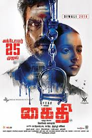
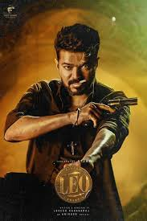

🎬 Movies in the LCU

Kaithi (2019)
👤 Dilli (Karthi)
⚔️ An ex-convict helps police fight a drug mafia overnight.

Vikram (2022)
👤 Agent Vikram (Kamal Haasan)
🔍 A black-ops team takes on a powerful drug syndicate.

Leo (2023)
👤 Parthiban / Leo Das (Vijay)
💣 A café owner’s dark past as a gangster resurfaces.